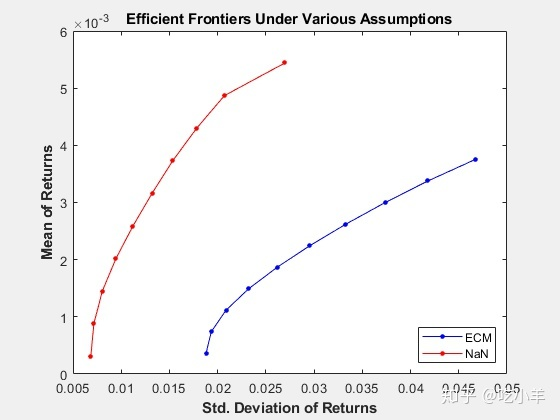

Home
本示例说明如何使用缺失的数据算法进行投资组合优化和评估。本示例使用12种计算机技术股，6家硬件和6家软件公司的五年间每日总收益数据进行分析。该示例估计了这些股票的均值和协方差矩阵，并通过朴素方法和ECM方法形成了有效的边界，然后比较了结果。
加载数据文件。
load ecmtechdemo.mat该数据文件包含以下三个量：
Assets是示例中12种股票的股票行情的元胞数组。Data是12只股票每日总收益的1254X12矩阵。Dates是与数据关联的日期的1254X1列向量。
数据的时间范围从2000年4月19日到2005年4月18日。Assets的第六只股票是Google（GOOG），该股票于2004年8月19日开始交易。因此，2004年8月20日之前的所有回报均不存在并表示为NaN。此外，亚马逊（AMZN）在过去五年中也有几天的数据缺失。
估算这12只股票的均值和协方差的朴素方法是：消除含有缺值的任何一行（天）的数据。使用ecmninit函数的'nanskip'选项的来实现此操作。
[NaNMean, NaNCovar] = ecmninit(Data,'nanskip');将上述朴素方法与使用所有可用数据和函数ecmnmle计算均值和协方差的方法进行比较。首先，调用ecmnmle，不使用任何输出参数，为获取有意义的估计建立足够的数据。
ecmnmle(Data);该图表明，即使有将近87％的Google数据都是NaN值，该算法也只经过四次迭代即可收敛。
ecmnmle完成均值和协方差的估算。
[ECMMean, ECMCovar] = ecmnmle(Data)
ECMMean = 12×1
?
0.0008
0.0008
-0.0005
0.0002
0.0011
0.0038
-0.0003
-0.0000
-0.0003
-0.0000
?
ECMCovar = 12×12
?
0.0012 0.0005 0.0006 0.0005 0.0005 0.0003 0.0005 0.0003 0.0006 0.0003 0.0005 0.0006
0.0005 0.0024 0.0007 0.0006 0.0010 0.0004 0.0005 0.0003 0.0006 0.0004 0.0006 0.0012
0.0006 0.0007 0.0013 0.0007 0.0007 0.0003 0.0006 0.0004 0.0008 0.0005 0.0008 0.0008
0.0005 0.0006 0.0007 0.0009 0.0006 0.0002 0.0005 0.0003 0.0007 0.0004 0.0005 0.0007
0.0005 0.0010 0.0007 0.0006 0.0016 0.0006 0.0005 0.0003 0.0006 0.0004 0.0007 0.0011
0.0003 0.0004 0.0003 0.0002 0.0006 0.0022 0.0001 0.0002 0.0002 0.0001 0.0003 0.0016
0.0005 0.0005 0.0006 0.0005 0.0005 0.0001 0.0009 0.0003 0.0005 0.0004 0.0005 0.0006
0.0003 0.0003 0.0004 0.0003 0.0003 0.0002 0.0003 0.0005 0.0004 0.0003 0.0004 0.0004
0.0006 0.0006 0.0008 0.0007 0.0006 0.0002 0.0005 0.0004 0.0011 0.0005 0.0007 0.0007
0.0003 0.0004 0.0005 0.0004 0.0004 0.0001 0.0004 0.0003 0.0005 0.0006 0.0004 0.0005
?给出了从朴素方法和ECM方法得出的资产收益的均值和协方差的估计值，估计投资组合以及在这两种方法的有效边界上，相关预期收益和风险。
[ECMRisk, ECMReturn, ECMWts] = portopt(ECMMean',ECMCovar,10);
[NaNRisk, NaNReturn, NaNWts] = portopt(NaNMean',NaNCovar,10);将结果绘制在同一张图上以说明差异。
figure(gcf)
plot(ECMRisk,ECMReturn,'-bo','MarkerFaceColor','b','MarkerSize', 3);
hold on
plot(NaNRisk,NaNReturn,'-ro','MarkerFaceColor','r','MarkerSize', 3);
title('\bfEfficient Frontiers Under Various Assumptions');
legend('ECM','NaN','Location','SouthEast');
xlabel('\bfStd. Deviation of Returns');
ylabel('\bfMean of Returns');
hold off
显然，朴素方法对这12只技术股的风险收益权衡持乐观态度。但是，证明在于投资组合的权重。要查看权重：
Assets
Assets = 1x12 cell
Columns 1 through 6
?
{'AAPL'} {'AMZN'} {'CSCO'} {'DELL'} {'EBAY'} {'GOOG'}
?
Columns 7 through 12
?
{'HPQ'} {'IBM'} {'INTC'} {'MSFT'} {'ORCL'} {'YHOO'}
ECMWts
ECMWts = 10×12
?
0.0358 0.0011 0 0 0 0.0989 0.0535 0.4676 0 0.3431 0 0
0.0654 0.0110 0 0 0 0.1877 0.0179 0.3899 0 0.3282 0 0
0.0923 0.0194 0 0 0 0.2784 0 0.3025 0 0.3074 0 0
0.1165 0.0264 0 0 0 0.3712 0 0.2054 0 0.2806 0 0
0.1407 0.0334 0 0 0 0.4639 0 0.1083 0 0.2538 0 0
0.1648 0.0403 0 0 0 0.5566 0 0.0111 0 0.2271 0 0
0.1755 0.0457 0 0 0 0.6532 0 0 0 0.1255 0 0
0.1845 0.0509 0 0 0 0.7502 0 0 0 0.0143 0 0
0.1093 0.0174 0 0 0 0.8733 0 0 0 0 0 0
0 0 0 0 0 1.0000 0 0 0 0 0 0
NaNWts
NaNWts = 10×12
?
0 0 0 0.1185 0 0.0522 0.0824 0.1779 0 0.5691 0 0
0.0576 0 0 0.1219 0 0.0854 0.1274 0.0460 0 0.5617 0 0
0.1248 0 0 0.0952 0 0.1195 0.1674 0 0 0.4802 0.0129 0
0.1969 0 0 0.0529 0 0.1551 0.2056 0 0 0.3621 0.0274 0
0.2690 0 0 0.0105 0 0.1906 0.2438 0 0 0.2441 0.0419 0
0.3414 0 0 0 0 0.2265 0.2782 0 0 0.0988 0.0551 0
0.4235 0 0 0 0 0.2639 0.2788 0 0 0 0.0337 0
0.5245 0 0 0 0 0.3034 0.1721 0 0 0 0 0
0.6269 0 0 0 0 0.3425 0.0306 0 0 0 0 0
1.0000 0 0 0 0 0 0 0 0 0 0 0从Google IPO到估算期末期间，NaNWts中朴素的投资组合倾向于偏爱APL，而ECMWts中的ECM组合则抑制AAPL权重，并且相对于朴素权重而言，推荐增加GOOG的权重。
为了评估估计误差的影响，尤其是缺失数据的影响，可用ecmnstd计算标准误差。尽管可以估计均值和协方差的标准误（standard error），但通常仅靠均值估计的标准误是主要的关注量。
StdMeanF = ecmnstd(Data,ECMMean,ECMCovar,'fisher');使用'hessian'选项计算使用数据生成的Hessian矩阵（其说明由于缺少数据而可能造成的信息丢失）的标准误。
StdMeanH = ecmnstd(Data,ECMMean,ECMCovar,'hessian');标准误的差异表明，由于缺少数据，资产预期收益估计的不确定性增加。要查看差异：
Assets
Assets = 1x12 cell
Columns 1 through 6
?
{'AAPL'} {'AMZN'} {'CSCO'} {'DELL'} {'EBAY'} {'GOOG'}
?
Columns 7 through 12
?
{'HPQ'} {'IBM'} {'INTC'} {'MSFT'} {'ORCL'} {'YHOO'}
StdMeanH'
ans = 1×12
?
0.0010 0.0014 0.0010 0.0009 0.0011 0.0021 0.0009 0.0006 0.0009 0.0007 0.0010 0.0012
StdMeanF'
ans = 1×12
?
0.0010 0.0014 0.0010 0.0009 0.0011 0.0013 0.0009 0.0006 0.0009 0.0007 0.0010 0.0012
StdMeanH' - StdMeanF'
ans = 1×12
10-3 ×
?
-0.0000 0.0021 -0.0000 -0.0000 -0.0000 0.7742 -0.0000 -0.0000 -0.0000 -0.0000 -0.0000 -0.0000缺失数据的两只资产AMZN和GOOG是唯一由于信息丢失而具有差异的资产。
注：本文根据MATLAB官网内容修改而成。
======================================================================
我的测试结果及程序
下面是我测试的代码：